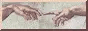

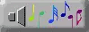
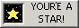
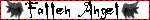
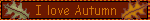
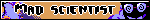
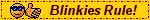
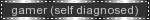
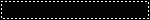
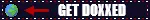
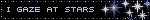
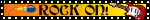
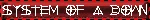
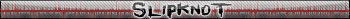
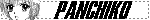
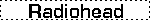
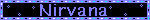
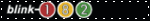
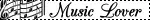


90's News:
1990 BREAKING NEWS: East and West Germany Officially Reunite as Historic Cold War Division Ends, Crowds Celebrate as a United Europe Marks a New Era of Political Cooperation and Economic Integration After Decades of Separation. BREAKING NEWS: Iraq Invades Kuwait Overnight, Triggering International Condemnation as the United States and Allied Nations Mobilize Military Forces and Prepare for a Potential Large-Scale Conflict in the Gulf Region. 1991 BREAKING NEWS: Operation Desert Storm Launches with Massive Airstrikes as U.S.-Led Coalition Begins Major Offensive to Expel Iraqi Forces from Kuwait, Marking One of the Most Televised Conflicts in Modern History. BREAKING NEWS: Soviet Union Officially Dissolves as President Gorbachev Resigns, Ending Over 70 Years of Communist Rule and Redrawing the Global Political Landscape with 15 Newly Independent Republics. 1993 BREAKING NEWS: Bombing at the World Trade Center Leaves Six Dead and Hundreds Injured as Terrorist Attack Shakes New York City, Raising National Concerns About Growing Global Extremism. 1995 BREAKING NEWS: Oklahoma City Federal Building Bombed in Largest Domestic Terror Attack in U.S. History, Leaving 168 Dead and Prompting Nationwide Investigations Into Anti-Government Extremism.